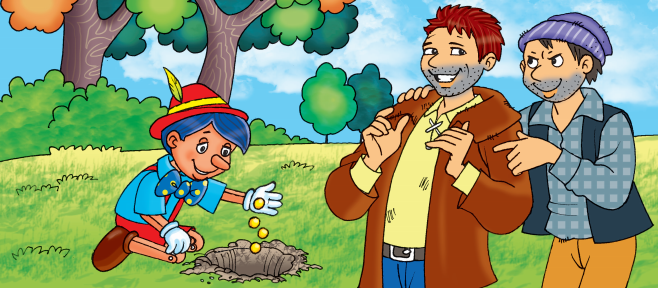
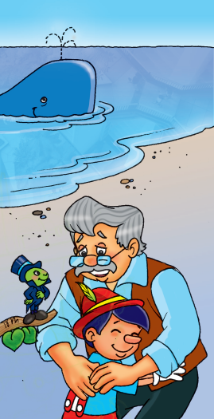

Los refranes
Alumno:
Los refranes
Alumno:
 Exploro para recordar
Exploro para recordar
Pinocho entre refranes
(Adaptación)

Este que les presento aquí es un buen hombre, se llama Gepetto, es carpintero y vivió muchos años solo hasta que un buen día decidió construir un muñeco de madera para tener compañía, y como “el que la sigue la consigue”, después de muchos intentos, nuestro amigo tuvo su compañero perfecto. Le puso por nombre Pinocho y su alegría era tanta que comenzó a desear que su amigo tuviera vida propia, después de todo “soñar no cuesta nada”. De ese modo, Pinocho sería como su hijo y ambos podrían estar muy felices porque “el amor y la alegría vienen siempre en compañía”.
Como había sido muy buen hombre a lo largo de su vida y sus sentimientos eran sinceros, no tardó en aparecer un hada que vino a concederle su deseo. Esta, al principio, no creía que un viejito quisiera tener esa responsabilidad, pero luego pensó “de músico, poeta y loco todos tenemos un poco”, así que decidió darle la oportunidad a Gepetto de demostrar sus habilidades como padre. Y entonces, durante la tenebrosa oscuridad de la noche, el hada sonriente dio vida a Pinocho.
Al día siguiente, el buen hombre se levantó muy temprano como de costumbre y cuando fue a ver su obra de arte no cabía en sí del asombro, su Pinocho tenía vida. Lo primero que pensó fue: “al que madruga Dios lo ayuda”, y decidió que había sido recompensado y que era hora de cuidar a su creación con todo el amor de padre. Empezó a pensar en cómo mandar a su hijo al colegio, debía aprender como los demás, pero el problema estaba en que nuestro carpintero no tenía dinero suficiente, hasta que de tanto darle vueltas al asunto se le ocurrió vender su gabán. Y como “del dicho al hecho no hay más que un trecho”, al otro día ya Pinocho estaba de camino al colegio.
Lo que no sabía el bueno de Gepetto era que su hijo prefería divertirse que estudiar, algo así como “árbol que nace torcido, jamás su tronco endereza”. Siempre buscaba malas compañías y como “quien con lobos se junta a aullar aprende”, empezó a dejar de ir a las clases. Para ese entonces ya Pinocho iba al colegio acompañado por su amigo el grillo, que nunca lo dejaba solo y siempre le daba buenos consejos, lo exhortaba a ser más cuidadoso porque decía verás: “después del gusto viene el susto”. Pepe, que así se llamaba el grillo, tenía mucha paciencia y era muy inteligente, y no le perdía de vista a nuestro niño de madera, tenía la esperanza de hacerlo cambiar de parecer.
Un día, Pinocho supo que el teatro de títeres daba una función en el pueblo y quiso ir para ver cómo era, pero para su poca suerte y como dice nuestra gente: “fue por lana y volvió trasquilado” porque el dueño del teatro después de verlo quiso quedarse con él: “¡Quién no querría ver a un títere así!, pagarían millones”, pensaba el avaricioso hombre, pues no existía un títere que caminara por sí mismo y que hablara como un niño de verdad.
Por su parte, Pinocho quería quedarse trabajando en el teatro de títeres para ganar dinero, así no tendría que estudiar más y podría comprarle un gabán a su viejo padre, ya que este se había quedado sin el suyo para comprarle los útiles escolares. Entretanto, su padre estaba muy ocupado pensando en cómo encontrar una solución que hiciera que su hijo tuviera todo lo necesario para sus estudios, aunque era de los que creía firmemente que “al mal tiempo buena cara”. El grillo, por su parte, intentaba convencer a su amigo de que debía regresar a su casa y no cesaba de hablarle al oído, pero nuestro Pinocho decidió que no, que debía quedarse en el teatro y así lo hizo.
Fueron tiempos muy buenos para el titiritero, cada vez iba más gente a ver al famoso títere que se movía solo y podía hablar, estaba feliz. Los días pasaron rápido, y Pinocho empezó a extrañar a su padre, una tarde, después de trabajar muy duro se sentó a llorar desconsoladamente y no lo pensó más, le pidió al hombre que lo dejara ir. Al dueño del circo no le gustó mucho la idea, pero ya lo había retenido por mucho tiempo y pensó: “agua que nos has de beber, déjala correr”, así que le dio unas monedas de oro y aceptó que se fuera.
Pinocho salió feliz para su casa y cuando iba por el campo se encontró con dos ladrones que no habían tenido suerte en sus dos fechorías anteriores, pero al ver la cara de alegría e inocencia de nuestro amigo, se dijeron entre ellos: “la tercera es la vencida”. Se hicieron pasar por buenas personas y le dijeron que si enterraba las monedas que traía, al otro día tendría muchas más. Y como es verdad ese refrán popular que dice: “cuanto más tienes, más quieres”, Pinocho empezó a pensar en la cantidad de monedas que tendría al día siguiente y que podría llevar muchas más a su casa y ayudar a su padre. Como siempre, su amigo el grillo que no lo abandonaba le aconsejó que no confiara en esos bribones por eso de que “caras vemos, corazones no sabemos”. Sin embargo, sin dar oído al grillo que le advertía del engaño, Pinocho sepultó las monedas.
Al siguiente día, cuando fue a recogerlas, se dio cuenta de que los ladrones se las habían llevado, no había nada que hacer, solo continuar el regreso a casa de Gepetto. Decepcionados y tristes, Pinocho y Pepe Grillo continuaron su camino y más adelante se cruzaron con un grupo de niños que marchaban alegres. Pinocho les preguntó a dónde iban y el hombre que los conducía respondió que iban al país de los juguetes, un lugar donde se puede jugar sin parar, y que si él deseaba podía unirse al grupo.
Y he aquí que, una vez más, a pesar de que el grillo le recordó que Gepetto estaría muy afligido buscándolos, Pinocho no escuchó a su amigo, se fue con los niños y le dijo al grillo: “iremos después, recuerda: «más vale tarde que nunca»”.
En el País de los juguetes, Pinocho jugó y brincó todo lo que quiso. Enseguida se olvidó de Gepetto, solo pensaba en divertirse y probar todos los juguetes del mundo. Pero, a medida que pasaba el tiempo el cuerpo de Pinocho cambiaba… le empezaron a salir orejas y una cola… el niño de madera se estaba convirtiendo en un burro. No sabía Pinocho que el hada que le dio la vida lo estaba condenando por su falta de responsabilidad, y cuando se dio cuenta de que sus orejas estaban grandes y empezaba a crecerle un hocico en medio de la cara, lloró inconsolablemente. Al oírle, el hada le tuvo algo de compasión y le devolvió su rostro pero le advirtió que a partir de ese momento, cada vez que mintiera le crecería la nariz.
Pinocho y Pepe Grillo volvieron a seguir el camino del regreso a casa, pero el hada les hizo saber que el bueno de Gepetto, también había salido a buscar a su hijo en una barquita de vela y terminó engullido por una ballena, la cual murmuró después de tener al carpintero en su barriga: “a buena hambre, no hay pan malo”.
Desesperado por la pérdida de su padre, Pinocho y Pepe Grillo, se fueron a alta mar con la determinación de encontrarse con la ballena que se tragó a Gepetto, y tanta fue su suerte que también fueron engullidos por ella. Con tanta comida en un mismo día, el enorme animal marino se sentía muy contento y decía: “barriga llena, corazón contento”. Lo que no sabía la ballena era que en su interior padre e hijo se encontraban y se abrazaban felices. El encuentro le devolvió a Gepetto sus ganas de salir de allí y entre los dos decidieron hacer una fogata para obligar a la ballena a estornudar.
De ese modo lograron salir y se fueron a casa. Pinocho prometió nunca más mentir y ser un buen hijo, por eso el hada lo convirtió en un niño de verdad y todos fueron muy felices, porque: “amor con amor se paga”.
